하나의 점에서 시작하는 LiDAR 기반 창작 이야기
Technical Director / Creative Builder
미디어와 기술로 창작을 위한 도구, 아티스트를 위한 도구를 만들고 연구한다. 현실과 가상의 인터페이스에 관심을 두고 실험을 이어간다.
무용원 · 영상원 강사
기술 개발 팀장
테크니컬 디렉터
단일한 점에서 시작해 RGB, XYZ, 인공지능으로 확장한다. 기술 용어는 최대한 덜어내고, 창작자로서 LiDAR를 점유하는 방법을 이야기한다.
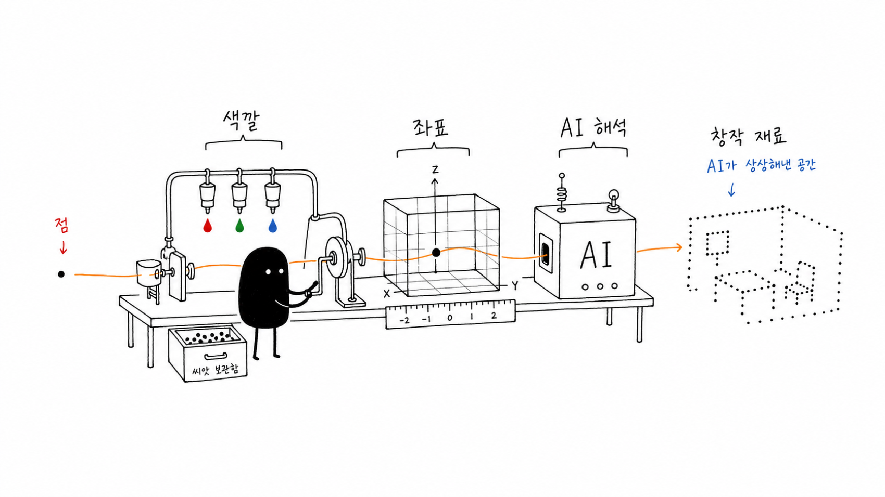
포인트 클라우드를 바라보는 감각
LiDAR로 만들어진 포인트 클라우드 이미지를 바라보며 느끼는 감정은 흥미롭게 닮아 있다. 감각적인 응시 — 이 느낌을 배제할 수는 없다.
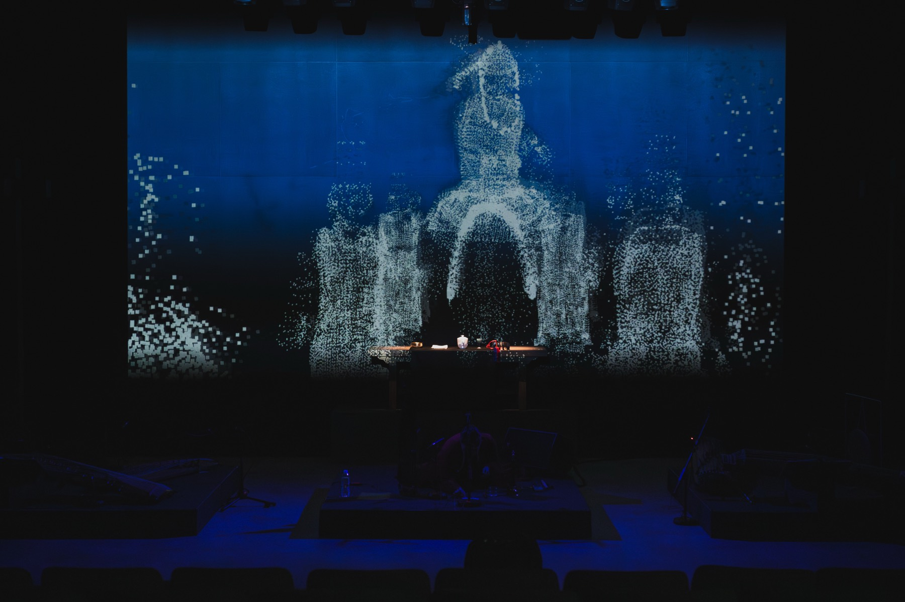
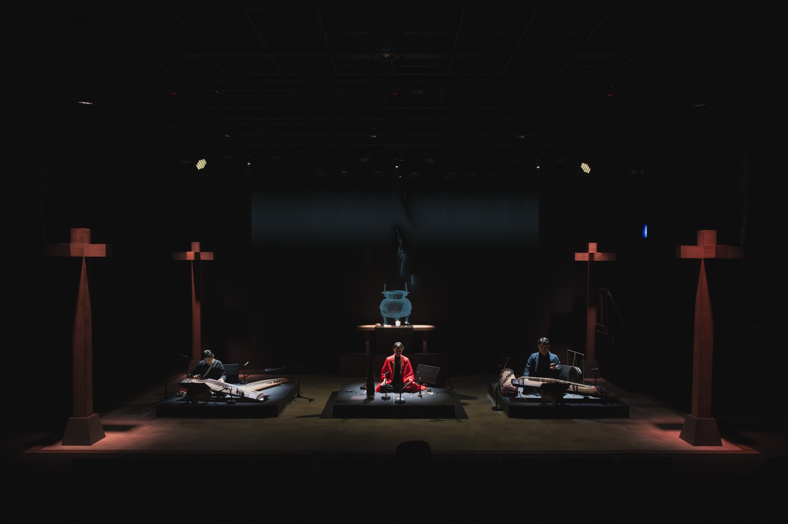
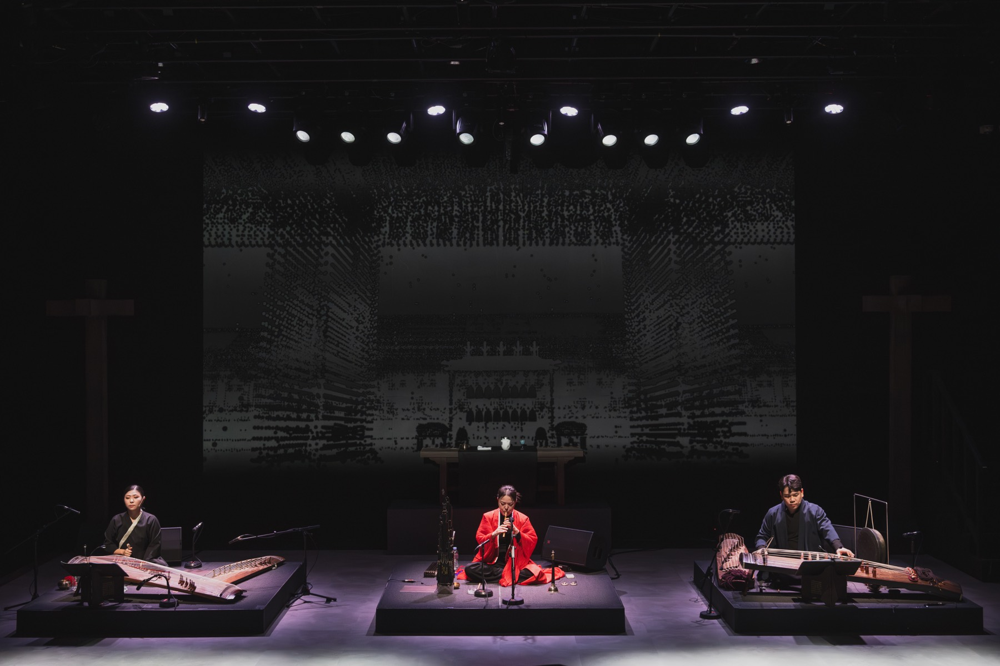
전통 기반 작가 오초롱 공연의 키비주얼로 사용된 포인트 클라우드
공간을 실측한다 · Location Based
작품 설치는 스크린을 넘어 현실 공간에 존재한다. Location Based 작업에는 늘 공간 실측의 아쉬움이 남았다.
실측 데이터가 있어야 현실이든 가상이든 같은 컨디션에서 구현할 수 있다. LiDAR 스캐닝이 이를 정교하게 해낸다.
움직이고 싶다는 욕망
멋진 비주얼도, 공간 실측도 해봤지만 무언가를 움직이고 싶다는 욕망이 남는다. Azure Kinect로 프레임마다 촬영해 포인트 클라우드 비디오를 시도한다.
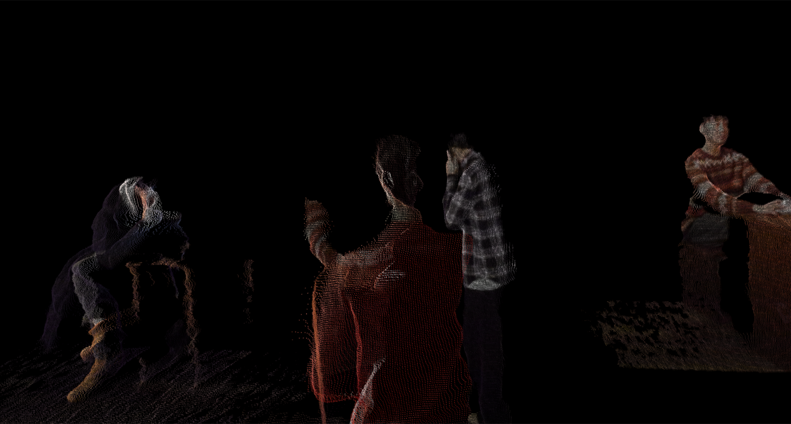
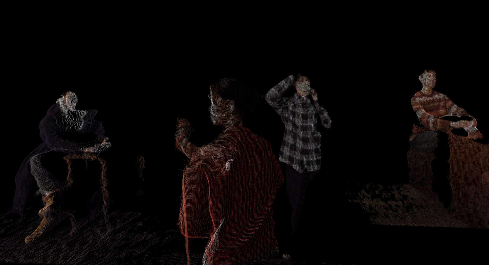
가상부터 현실까지
포인트 클라우드와 가우시안 스플랫팅을 가상부터 현실까지 적극적으로 접목하는 실험을 진행 중이다.
보이는 결과물 그 자체를 위한 시도
나와 사물 사이의 거리를 읽어내는 도구
포인트 클라우드 데이터를 직접 얻어내는 앱
작품 제작 — 도구 제작 — 실험으로 다양하게 활용한다
노드로 잇는 실시간의 가능성
TouchDesigner는 10년 전부터 실시간 렌더링과 인터랙티브를 가능케 하는 툴로 각광받는다. 렌더링이 곧 실시간이다.
노드 기반 프로그래밍으로, 프로그래밍에 익숙하지 않은 사람에게도 가능성을 연다.
렌더링 시간이 없다. 최적화가 필요하지만, AI가 그마저 꽤 많은 것을 해결해 준다.
오퍼레이터를 바로 꺼내 쓴다. 도구로 작업 영역을 쉽게 확장한다.
아두이노·LiDAR 하드웨어부터 Ableton·Bitwig 소프트웨어까지 잇는다.
LiDAR 장비는 카메라(IR)로 닿는 물체의 위치를 찍고 돌아온다. 돌아온 값으로 거리와 공간 좌표를 계산한다.
그 점을 색으로 재구성하면 포인트 클라우드가 된다. 색(RGBA)과 좌표(XYZ) — 이 두 데이터를 지금부터 하나씩 들여다본다.
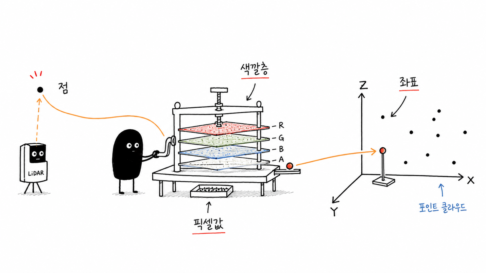
빛이 물체에 닿고 돌아온 값을 색으로 재구성한다. 이때 색은 단순한 색이 아니다. RGBA — 네 개의 층이 진 이미지다.
스테레오 사운드가 양쪽에 같은 소리를 내보내듯, 각 채널의 픽셀 개수는 같다. 모든 픽셀의 RGBA 채널 수는 동일하다.
돌아온 값으로 거리와 방향을 계산해 XYZ 3차원 좌표를 얻는다. 그 좌표에 점을 뿌리면 — 이것이 포인트 클라우드다.
실시간이라는 것은, 이 점들을 지금 이 순간 조정하고 변주할 수 있다는 뜻이다.
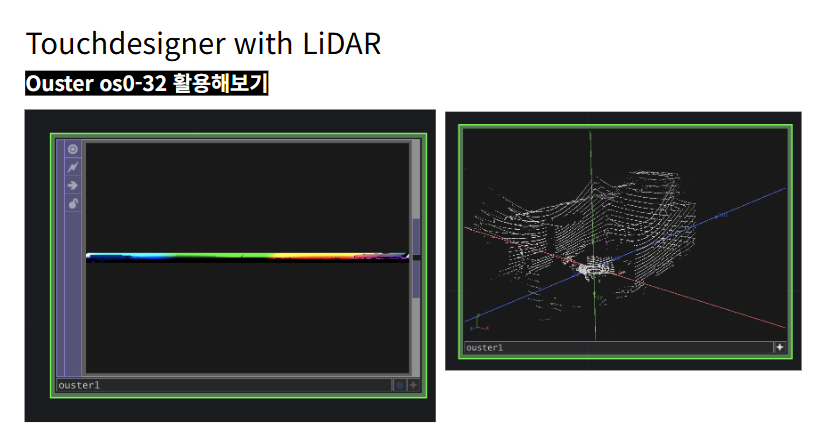
2023년 계원예대 학생들과 진행한 워크샵 — Ouster OS0-32로 실제 공간을 실시간 포인트 클라우드로 받아냈다.
실시간으로 다룰 수 있는 장비들 —
스플랫 · 4DGS · 그리고 AI
점을 그대로 두지 않는다. 번지는 타원(splat)으로 표면을 채운다. 겹쳐진 표면은 시점이 자유롭고, 렌더가 빠르다.
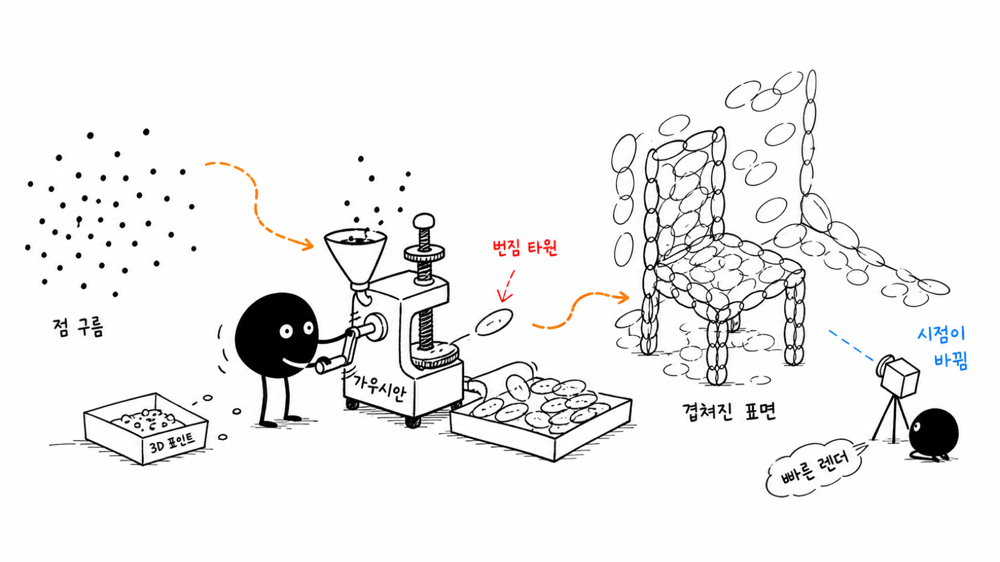
맥도 약진 중이다. 자체 모델을 기반으로 이미지 한 장에서 가우시안 스플랫팅이 가능해졌다.
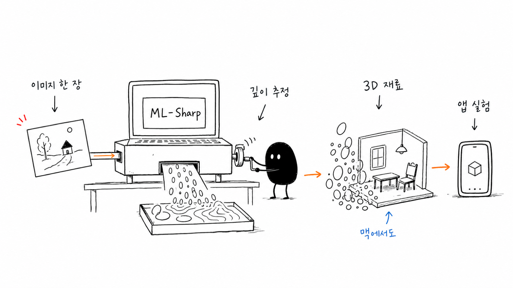
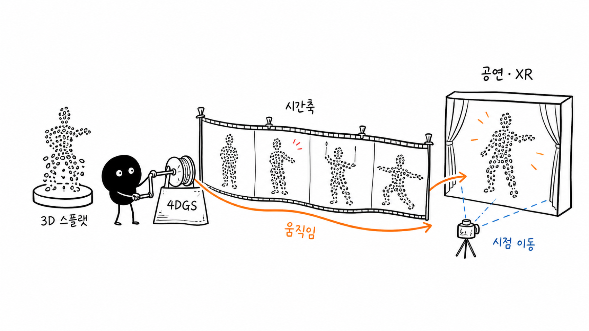
경량화된 가우시안 스플랫팅으로 공연·XR에 접목한다. 볼류메트릭 캡처 → 4D Gaussian Splatting. 시간축으로 움직이고, 시점이 이동한다.
gracia.ai — 볼류메트릭 4DGS현실을 스캔해 세계 모델을 만든다. 데이터가 있다면, 그 데이터를 기반으로 한 상상의 세계도 구현할 수 있지 않을까.
현실 스캔 → 세계 모델 → 로봇 행동 → 다시 피드백으로 돌아온다.
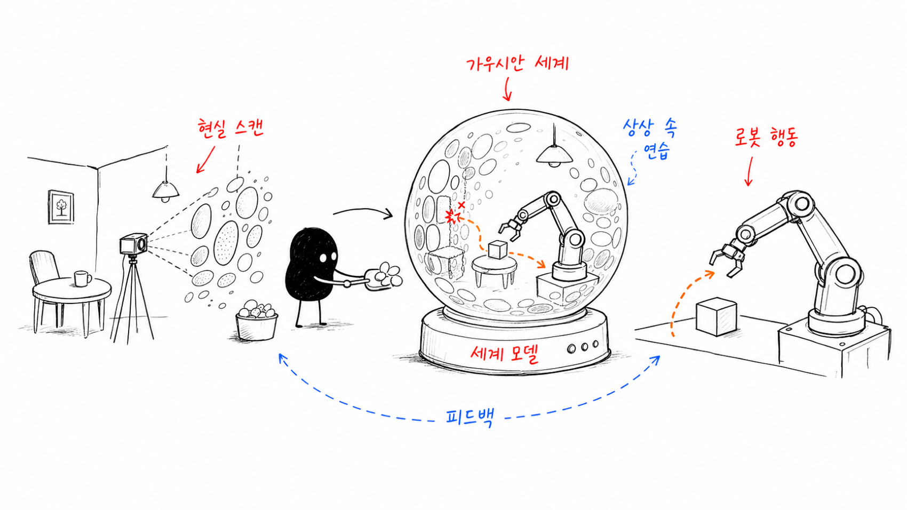
이미지·텍스트에서 3D 월드를 생성
브라우저에서 펼치는 몰입형 경험
스캔한 세계 위에서 로봇이 학습한다
LLM으로 재구성한 한국인 합성 데이터
기술 용어 뒤에 숨지 않고, 창작자로서 LiDAR를 점유하는 방법. 점을 어떻게 바라보고, 어디까지 데려갈지는 — 결국 만드는 사람의 몫이다.